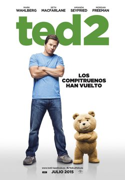
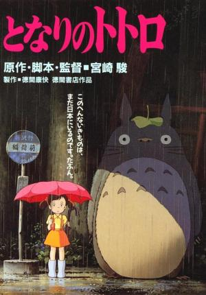

Animación |
Acción |
Terror |

Comedia |
|  |
Ted 2Sinopsis:Cuando John Bennett (Mark Wahlberg) era pequeño, deseaba que su osito de peluche Ted fuera un oso de verdad y, por desgracia, su sueño se hizo realidad. Más de veinte años después, Ted sigue con John y saca de quicio a su novia Lori, que empieza a perder la paciencia. Para colmo, a John no parece preocuparle su futuro profesional y se pasa la vida fumando porros con Ted. A pesar de ello, John intenta alcanzar la madurez, pero parece que para conseguirlo le resulta indispensable la ayuda de Ted. |
Título original
Ted |
|
Un lugar tranquiloSinopsis:Sigue la historia de una familia que vive en una casa en el bosque cuidándose de no emitir ningún sonido. Si no te escuchan, no pueden cazarte... |
Título original
A Quiet Place |
||
|  |
TotoroSinopsis:En los años 50, una familia japonesa se traslada al campo. Las dos hijas, Satsuki y Mei, entablan amistad con Totoro, un espíritu del bosque. El padre es un profesor universitario que estimula la imaginación de sus hijas relatándoles fábulas e historias mágicas sobre duendes, fantasmas y espíritus protectores de los hogares, mientras la madre se encuentra enferma en el hospital. |
Título original
Tonari no Totoro |
|